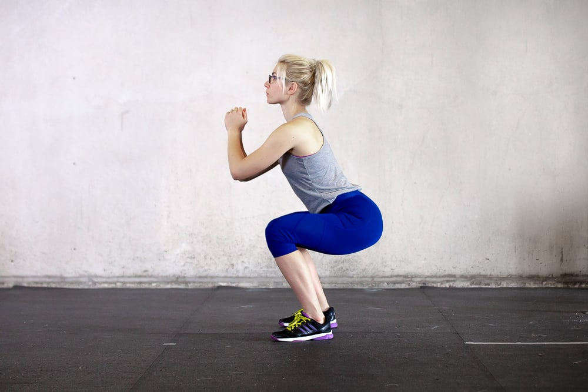
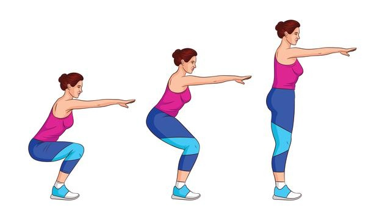

Técnica · En casa · 9 de junio de 2021
Sentadilla clásica con autocarga
Sentadilla Clásica
Puntos clave sobre la sentadilla clásica:
- Ejercicio universal y funcional: La sentadilla es un movimiento natural que hemos realizado desde siempre, pero el sedentarismo (como el uso excesivo de sillas) ha afectado nuestra técnica.
- Beneficios: Fortalece piernas (cuádriceps, femorales, pantorrillas), glúteos y abdomen (al activar el core para mantener la estabilidad).
- Variedad: Existen muchas formas de hacer sentadillas (clásicas, con salto, con peso, etc.), pero la técnica debe adaptarse a la condición física de cada persona.
- Importancia de la técnica: Para evitar lesiones y maximizar resultados, es crucial aprender a hacerlas correctamente, idealmente con la guía de un profesional.
¿Cómo hacer una sentadilla clásica correctamente?
- Posición inicial:
- Pies separados a la anchura de los hombros, con las puntas ligeramente hacia afuera.
- Espalda recta, mirada al frente y core activado (contrae el abdomen).
- Descenso:
- Flexiona las rodillas y empuja las caderas hacia atrás, como si fueras a sentarte en una silla.
- Mantén las rodillas alineadas con los pies (evita que se vayan hacia adentro).
- Baja hasta que los muslos estén al menos paralelos al suelo (si tu movilidad lo permite).
- Ascenso:
- Empuja desde los talones para volver a la posición inicial, manteniendo la espalda recta.
- No bloquees las rodillas al subir.
- Errores comunes:
- Inclinar el torso demasiado hacia adelante.
- Dejar que las rodillas se cierren hacia adentro.
- No bajar lo suficiente o bajar demasiado sin control.
Tipos de sentadillas mencionadas:
- Clásicas: Ideales para principiantes, enfocadas en fuerza y estabilidad.
- Con salto: Añaden un componente cardiovascular y explosivo, perfectas para quienes buscan intensidad y mejorar potencia.

